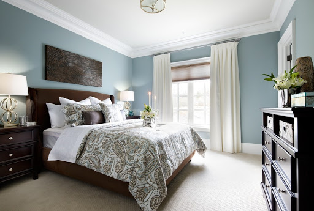
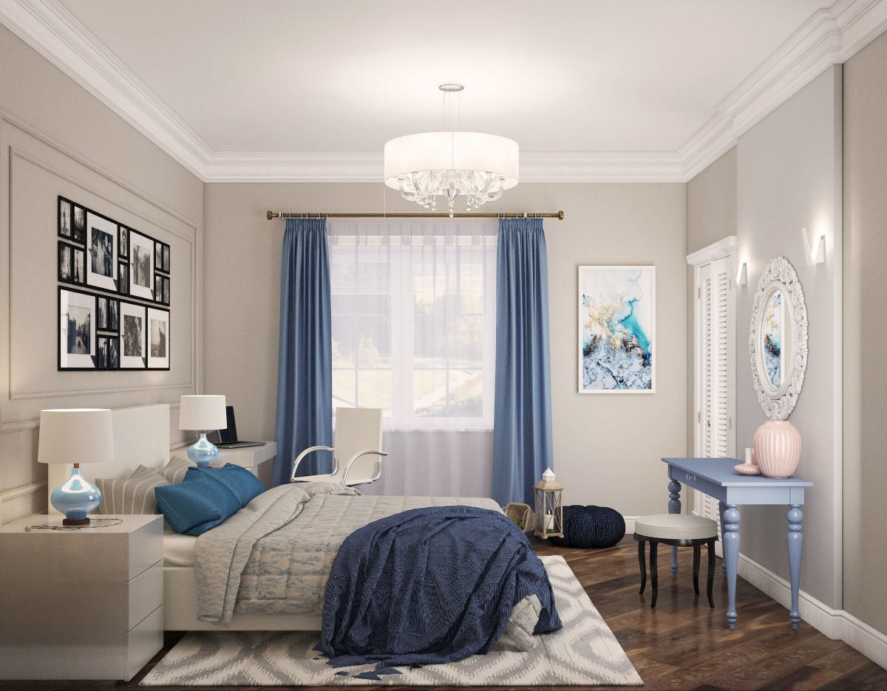

Спальня в американському стилі
Інтер'єр дизайну спальні в американському стилі може поєднувати в собі різні сучасні і антикварні предмети.


Ліжко, як правило, виконана в класичному дизайні. Присутній ряд тумбочок і комод. Якщо кімната досить простора, можна помістити місткий шафа.
Що стосується кольору, то їх тут два основних. По-перше, темний, який відноситься до меблів. Другий основний колір - світлий. Він присутній в обробці стін, аксесуарах і текстилі.